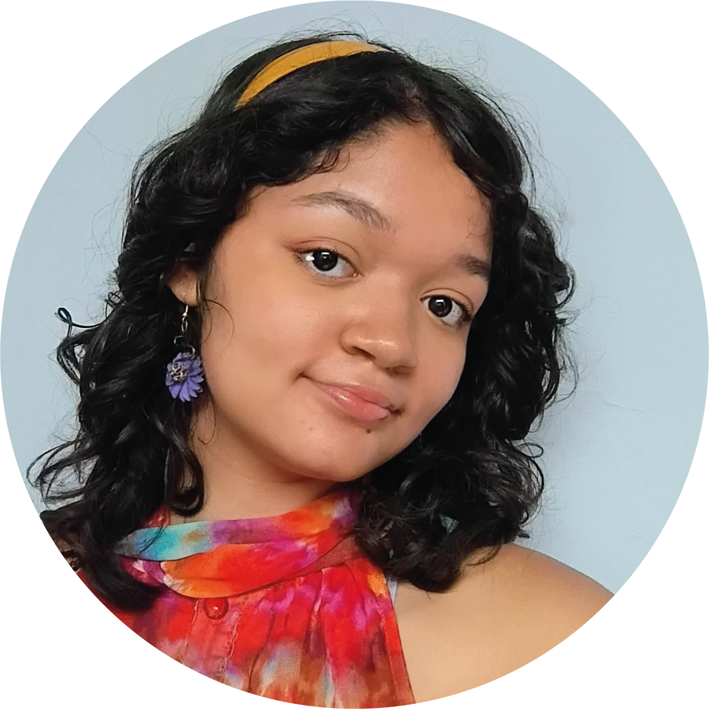

Acerca de mi
Mi nombre es Isabella Lilibed Puerta Otálvaro, nací el 25 de Diciembre de 2007 y mi color favorito es el morado. Mis hobbies son dibujar, tocar la guitarra, ver series y peliculas, leer. Tengo habilidad en el detalle, disciplina, responsabilidad, y la resiliencia. Me encanta pasar tiempo en casa con mi familia, pero tambien estar en espacios verdes para salir de la rutina.

Gracias por leer.